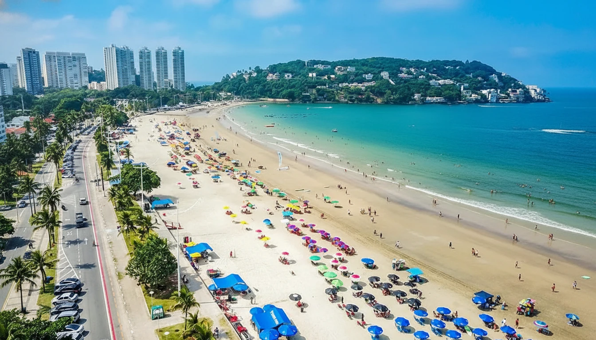
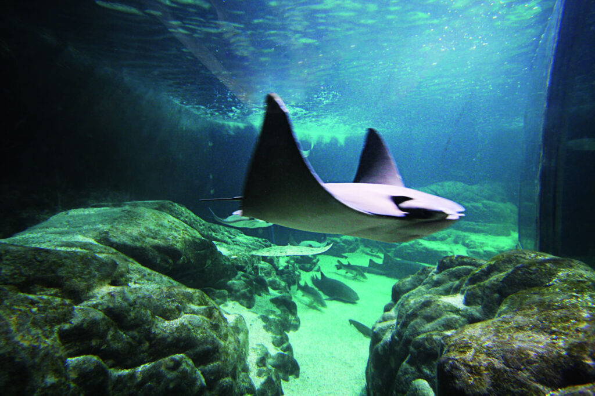

História
Origem: O Forote de São Filipe e o Cerne da Defesa do Litoral
Em 1502, antes mesmo da organização sistemática do território brasileiro, a enseada da Ilha de Santo Amaro — onde hoje se ergue o Guarujá — já era reconhecida como ponto crítico para a navegação entre o Atlântico Sul e o interior. Não foi Martim Afonso de Sousa, mas Gonçalo Coelho e Américo Vespúcio, em sua expedição de reconhecimento, quem primeiro registrou a posição estratégica do local ao mapear a costa sul brasileira. A ilha servia como refúgio natural para embarcações diante de ventos fortes e como porta de entrada para o Planalto Atlântico, caminho natural para o planalto de Piratininga.
Primeiro Núcleo de Defesa: Diferente da feitoria em Bertioga, o Guarujá teve seu primeiro núcleo fixo em termos militares. Em 1588, durante o governo de Tomé de Sousa, foi ordenada a construção do Forte de São Filipe, sob o comando do engenheiro militar Francisco de Faria. O forte foi erguido no morro da enseada, atual Morro do Voador, controlando a entrada da baía de Santos. A estrutura era modesta: uma estacada de madeira reforçada com alvenaria, artilhada com quatro falcões e duas coulebrinas, armas padrão da época. O objetivo era fechar o acesso aos corsários franceses e holandeses, que já haviam começado a desafiar o monopólio português.
O forte não tinha assentamentos civis permanentes, mas funcionou como ponto de apoio para expedições e como símbolo de soberania. A ilha de Santo Amaro era então um domínio indígena, ocupado por grupos tupis, que reagiam com resistência à ocupação. Documentos da época mencionam conflitos esporádicos, mas não há registros de alianças estáveis como as de Bertioga.
Desenvolvimento: Entre a Guerra e o Isolamento
Ao contrário de Bertioga, onde houve tentativa de aliança com os tupis, no Guarujá a dinâmica foi diretamente violenta. Os portugueses, interessados unicamente na segurança do litoral, não investiram em mediação cultural. Relatos do frei Vicente do Salvador, no século XVII, descrevem que os indígenas da ilha eram hostis, atacando embarcações portuguesas e resistindo à escravização. O forte passou por reparos constantes devido a danos causados por ataques indígenas e pela ação do tempo, mas nunca foi abandonado.
Não há registros de uma figura como Diogo de Braga no Guarujá — não houve tempo para laços pessoais ou casamentos que suavizassem a ocupação. A ilha permaneceu como bastião militar puro, sem um núcleo civil paralelo.
Séculos de Função Estratégica: Por muito tempo, o local não teve desenvolvimento urbano civil significativo, mantendo-se como guarita do litoral. Foi no Forte São João que, em 1563, os jesuítas Manoel da Nóbrega e José de Anchieta se hospedaram por cinco dias antes de partirem para Ubatuba para apaziguar os índios na Confederação dos Tamoios. Em 1565, foi também de Bertioga que Estácio de Sá e sua esquadra partiram para combater os franceses e fundar a cidade do Rio de Janeiro. O sítio primitivo era uma pequena linha de praia protegida pelo outeiro de Buriquioca, hoje Morro da Senhorinha.
Emancipação e Século XX
A emancipação política só veio em 1934, quando o Guarujá foi elevado à categoria de distrito de Santos. Mesmo assim, permaneceu como área exclusivamente militar e industrial, sem autonomia administrativa plena. Somente em 1947 foi criado o município do Guarujá, mas foi só na década de 1950, com a expansão do comércio portuário e a construção de resorts de elite, que o município passou a ganhar vida própria.
Pontos Turísticos do Guarujá
Forte São Filipe: Construído no século XVI (iniciado em 1588), é a principal atração histórica da cidade. Localizado no Morro do Voador, o forte oferece uma vista panorâmica da entrada do Porto de Santos e da Ilha de Santo Amaro. Diferente de muitas estruturas da época, ele passou por restaurações que permitiram a visitação interna, onde hoje funciona um pequeno museu com peças de artilharia antiga e informações sobre a defesa do litoral brasileiro contra franceses e holandeses.

Praia da Enseada: É a praia mais longa e urbanizada do município, estendendo-se por cerca de 5,5 quilômetros. Diferente de praias mais reservadas, a Enseada concentra a maior parte da vida noturna, hotéis e comércio do Guarujá. É conhecida pelo calçadão extenso, ideal para caminhadas, e por ser um ponto de encontro tanto para moradores quanto para turistas de fim de semana, mantendo uma infraestrutura densa ao longo de toda a sua extensão.

Aquário Municipal de Guarujá: Inaugurado em 1993, foi o primeiro aquário público do estado de São Paulo. Localizado próximo à Praia do Pitangueiras, o recinto abriga mais de 300 espécies marinhas e de água doce, incluindo tubarões, raias e tartarugas. O local também possui um núcleo de reabilitação de tartarugas marinhas, atuando na recuperação de animais feridos antes de devolvê-los ao oceano, combinando entretenimento com conservação ambiental.

Curiosidades
A Origem do Nome "Guarujá": O nome deriva do termo tupi guarujá, que significa "caminho estreito" ou "passagem difícil". Isso se refere geograficamente ao canal que separa a Ilha de Santo Amaro do continente (hoje atravessado pela Ponte Pênsil). Historicamente, essa "passagem" era o ponto crítico de defesa; quem controlava o estreito, controlava o acesso ao Porto de Santos e, consequentemente, a entrada para o Planalto de Piratininga.
O Cassino da Grande Internacional: Nas décadas de 1930 e 1940, antes da proibição dos jogos de azar no Brasil em 1946 pelo decreto-lei de Getúlio Vargas, o Guarujá abrigou o Cassino da Grande Internacional, considerado o maior e mais luxuoso da América Latina na época. O complexo atraía estrelas de Hollywood, como Walt Disney (que visitou a cidade em 1941), e a elite mundial. O prédio do cassino foi demolido, mas a história desse período de esplendor e boemia permanece como um marco cultural que transformou a imagem da cidade de um posto militar para um destino de lazer de elite.